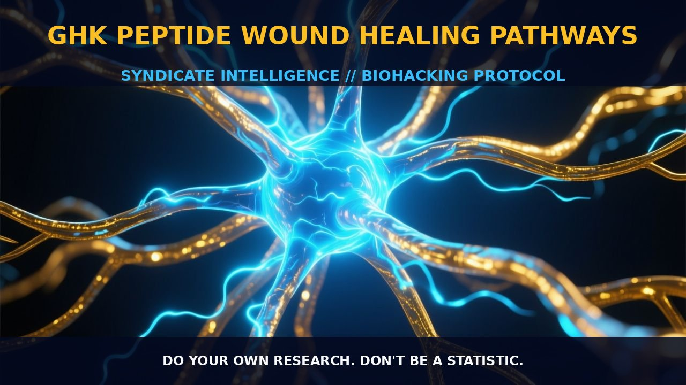

GHK-Cu: The Master Regulator of Wound Healing and

1. The Mechanism
GHK (glycyl-L-histidyl-L-lysine) is a naturally occurring peptide found in human plasma, saliva, and urine. Its levels peak around age 20 and decline significantly by age 60. GHK functions as a complex with copper 2+ ions, forming the compound GHK-Cu. This peptide is a potent modulator of multiple cellular pathways, particularly in skin regeneration and wound healing. GHK-Cu accelerates the synthesis and breakdown of collagen and glycosaminoglycans, which are crucial components for tissue repair.
GHK-Cu also stimulates the activity of metalloproteinases and their inhibitors, thereby influencing the extracellular matrix (ECM) remodeling. It attracts immune and endothelial cells to the site of injury, enhancing the immune response and angiogenesis necessary for wound healing. Additionally, GHK-Cu plays a key role in fibroblast proliferation and differentiation, key processes in the repair of damaged tissues.
GHK-Cu enhances the synthesis of collagen and glycosaminoglycans and increases the production of dermatan sulfate, chondroitin sulfate, and the small proteoglycan decorin. These molecules are essential for maintaining the structural integrity and elasticity of the skin. Furthermore, GHK-Cu stimulates the proliferation of keratinocytes, the primary cells responsible for the formation of the epidermis, and supports the function of dermal fibroblasts, crucial for collagen production and ECM stability.
2. Biological Leverage
GHK-Cu exhibits a broad spectrum of biological actions, all of which appear to be health-positive. It stimulates blood vessel and nerve outgrowth, essential for the formation of new tissue and the restoration of function in damaged areas. GHK-Cu increases the synthesis of collagen, elastin, and glycosaminoglycans, critical for maintaining the structural integrity of tissues. The peptide supports the function of dermal fibroblasts, responsible for collagen production and ECM stability.
GHK-Cu possesses powerful cell protective actions, including multiple anti-cancer activities and anti-inflammatory actions. It has been found to suppress molecules thought to accelerate the diseases of aging, such as NF-κB, and to possess anti-anxiety, anti-pain, and anti-aggression activities. GHK-Cu up- and downregulates at least 4,000 human genes, essentially resetting DNA to a healthier state. This broad regulatory action on gene expression underscores the peptide's role in tissue remodeling and repair.
GHK-Cu has been proposed as a therapeutic agent for skin inflammation, chronic obstructive pulmonary disease (COPD), and metastatic colon cancer. Its multifaceted action on various biological pathways contributes to its effectiveness in promoting wound healing and tissue regeneration.
3. Tactical Implementation
GHK-Cu can be administered topically or orally, with each route offering distinct advantages. Topical application is particularly beneficial for skin regeneration and wound healing, as it allows the peptide to directly interact with the target tissues. GHK-Cu in creams or serums can be applied directly to the skin, where it can stimulate collagen synthesis, enhance ECM remodeling, and promote the proliferation of keratinocytes and fibroblasts. For best results, apply GHK-Cu to the affected area several times a day, ensuring thorough coverage.
Oral administration of GHK-Cu can be achieved through supplements or dietary sources. A typical dose might range from 50 to 100 micrograms per day, but this can vary depending on the individual's needs and the specific formulation used. GHK-Cu supplements are often combined with other bioactive compounds to enhance their effectiveness. For example, combining GHK-Cu with copper 2+ ions in a balanced ratio ensures optimal bioavailability and efficacy. Additionally, GHK-Cu can be stacked with other peptides, such as palmitoyl tripeptide-5, to further enhance its anti-aging and tissue repair benefits.
Prostar Life Hack
Apply GHK-Cu topically to the affected area several times a day to promote rapid wound healing and skin regeneration. Combine it with copper 2+ ions for enhanced efficacy.
[ AUTHOR: LEAD TECHNICAL RESEARCHER ]